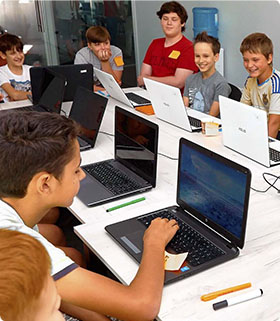

<section class="introduction-section container">
    <div class="container__wrapper">
        <p class="introduction-section__text introduction-section__text-first section-text">За останні 5 років кількість дітей, які вміють користуватися комп'ютером, збільшилася приблизно в 10 разів.</p>
        <p class="introduction-section__text section-text">Як зазначає більшість дослідників, ці тенденції будуть прискорюватися незалежно від шкільної освіти.</p>
        
        <div class="introduction-section-text-wrapper section-text">
            <p class="introduction-section__text-inner">Програма навчання <br> створюється за участі <br> відомих спеціалістів <br> IT сектору, <br> успішних стартаперів, <br> бізнес-тренерів <br> і підліткових психологів.</p>
        </div>
    </div>
</section>